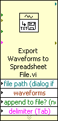

You can display VIs and Express VIs as icons or as expandable nodes. Expandable nodes appear as icons surrounded by a colored field. When displayed as expandable nodes, subVIs appear as icons surrounded by a yellow field and Express VIs appear as icons surrounded by a blue field. Use icons if you want to conserve space on the block diagram. Use expandable nodes to make wiring easier and to aid in documenting block diagrams. By default, subVIs appear as icons on the block diagram, and Express VIs appear as expandable nodes. To display a subVI or Express VI as an expandable node, right-click the subVI or Express VI and remove the checkmark next to the View As Icon shortcut menu item.
|
Note�� If you display a subVI or Express VI as an expandable node, you cannot enable database access for that node. |
When you resize an expandable subVI or Express VI, the input and output terminals of the subVI or Express VI appear below the icon. Optional terminals appear with gray backgrounds. Recommended or required input or output terminals you do not display appear as input or output arrows in the colored field that surrounds the subVI or Express VI icon. If you wire to an optional terminal when the subVI or Express VI is expanded, then resize the subVI or Express VI so the optional terminal no longer appears in the expanded field, the optional terminal appears as an input or output arrow in the colored field. However, if you unwire the optional terminal, the input or output arrow does not appear.
By default, inputs appear above outputs when you expand the subVI or Express VI. Right-click a terminal in the expandable field and select Select Input/Output from the shortcut menu to select an input or output to display. A line divides inputs from outputs in the shortcut menu. Labels for expandable subVIs and Express VIs appear in the colored field that surrounds the icon. To resize the expandable node so it accommodates the name of each terminal on a single line in the expandable field, right-click the subVI or Express VI and select Size to Text from the shortcut menu.
The following illustration shows an expandable subVI that displays four of 10 input and output terminals.
